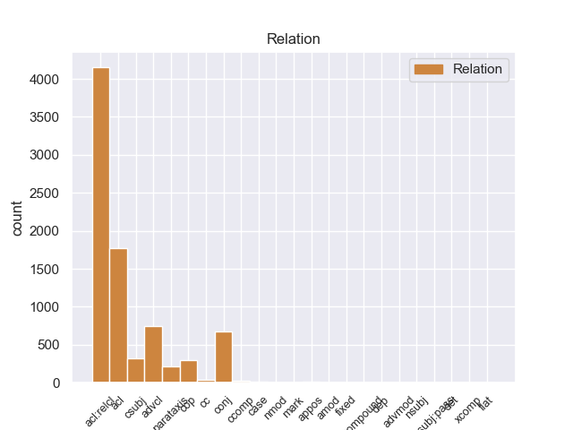
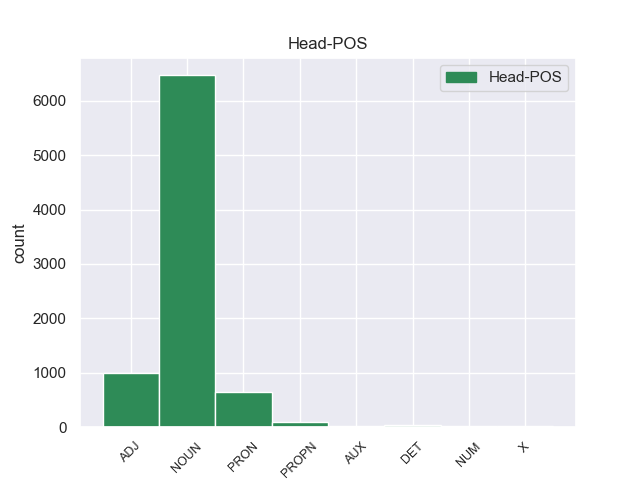
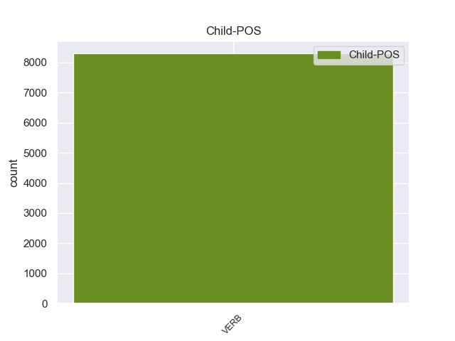

Distribution of features within this leaf



Agreement Rules sorted by frequency.
When the head token is NOUN and the dependent token is VERB.
1 El _ _ _ _ 0 _ _ _
2 estudio estudio NOUN _ Gender=Masc|Number=Sing 0 _ _ _
3 , _ _ _ _ 0 _ _ _
4 publicado publicado VERB _ Gender=Masc|Number=Sing|VerbForm=Part 2 acl _ _
5 en _ _ _ _ 0 _ _ _
6 la _ _ _ _ 0 _ _ _
7 revista _ _ _ _ 0 _ _ _
8 Environmental _ _ _ _ 0 _ _ _
9 Health _ _ _ _ 0 _ _ _
10 Perspectives _ _ _ _ 0 _ _ _
11 , _ _ _ _ 0 _ _ _
12 precisó _ _ _ _ 0 _ _ _
13 que _ _ _ _ 0 _ _ _
14 el _ _ _ _ 0 _ _ _
15 herbicida _ _ _ _ 0 _ _ _
16 mata _ _ _ _ 0 _ _ _
17 una _ _ _ _ 0 _ _ _
18 gran _ _ _ _ 0 _ _ _
19 proporción _ _ _ _ 0 _ _ _
20 de _ _ _ _ 0 _ _ _
21 esas _ _ _ _ 0 _ _ _
22 células _ _ _ _ 0 _ _ _
23 después _ _ _ _ 0 _ _ _
24 de _ _ _ _ 0 _ _ _
25 sólo _ _ _ _ 0 _ _ _
26 dieciocho _ _ _ _ 0 _ _ _
27 horas _ _ _ _ 0 _ _ _
28 de _ _ _ _ 0 _ _ _
29 exposición _ _ _ _ 0 _ _ _
30 a _ _ _ _ 0 _ _ _
31 concentraciones _ _ _ _ 0 _ _ _
32 menores _ _ _ _ 0 _ _ _
33 que _ _ _ _ 0 _ _ _
34 las _ _ _ _ 0 _ _ _
35 utilizadas _ _ _ _ 0 _ _ _
36 en _ _ _ _ 0 _ _ _
37 el _ _ _ _ 0 _ _ _
38 uso _ _ _ _ 0 _ _ _
39 agrícola _ _ _ _ 0 _ _ _
40 . _ _ _ _ 0 _ _ _
When the head token is NOUN and the dependent token is VERB. and the head token is ADJ and the dependent token is VERB.
1 El _ _ _ _ 0 _ _ _
2 reclamo _ _ _ _ 0 _ _ _
3 turístico _ _ _ _ 0 _ _ _
4 queda quedar VERB _ Mood=Ind|Number=Sing|Person=3|Tense=Pres|VerbForm=Fin 5 cop _ _
5 completado completado ADJ _ Gender=Masc|Number=Sing|VerbForm=Part 0 _ _ _
6 con _ _ _ _ 0 _ _ _
7 la _ _ _ _ 0 _ _ _
8 existencia _ _ _ _ 0 _ _ _
9 de _ _ _ _ 0 _ _ _
10 formaciones _ _ _ _ 0 _ _ _
11 coralinas _ _ _ _ 0 _ _ _
12 , _ _ _ _ 0 _ _ _
13 muy _ _ _ _ 0 _ _ _
14 apreciadas _ _ _ _ 0 _ _ _
15 por _ _ _ _ 0 _ _ _
16 los _ _ _ _ 0 _ _ _
17 submarinistas _ _ _ _ 0 _ _ _
18 , _ _ _ _ 0 _ _ _
19 y _ _ _ _ 0 _ _ _
20 las _ _ _ _ 0 _ _ _
21 expediciones _ _ _ _ 0 _ _ _
22 de _ _ _ _ 0 _ _ _
23 aventura _ _ _ _ 0 _ _ _
24 a _ _ _ _ 0 _ _ _
25 el _ _ _ _ 0 _ _ _
26 interior _ _ _ _ 0 _ _ _
27 de _ _ _ _ 0 _ _ _
28 el _ _ _ _ 0 _ _ _
29 Néguev _ _ _ _ 0 _ _ _
30 . _ _ _ _ 0 _ _ _
When the head token is NOUN and the dependent token is VERB. and the head token is ADJ and the dependent token is VERB. and the head token is PRON and the dependent token is VERB.
1 El _ _ _ _ 0 _ _ _
2 estudio _ _ _ _ 0 _ _ _
3 , _ _ _ _ 0 _ _ _
4 publicado _ _ _ _ 0 _ _ _
5 en _ _ _ _ 0 _ _ _
6 la _ _ _ _ 0 _ _ _
7 revista _ _ _ _ 0 _ _ _
8 Environmental _ _ _ _ 0 _ _ _
9 Health _ _ _ _ 0 _ _ _
10 Perspectives _ _ _ _ 0 _ _ _
11 , _ _ _ _ 0 _ _ _
12 precisó _ _ _ _ 0 _ _ _
13 que _ _ _ _ 0 _ _ _
14 el _ _ _ _ 0 _ _ _
15 herbicida _ _ _ _ 0 _ _ _
16 mata _ _ _ _ 0 _ _ _
17 una _ _ _ _ 0 _ _ _
18 gran _ _ _ _ 0 _ _ _
19 proporción _ _ _ _ 0 _ _ _
20 de _ _ _ _ 0 _ _ _
21 esas _ _ _ _ 0 _ _ _
22 células _ _ _ _ 0 _ _ _
23 después _ _ _ _ 0 _ _ _
24 de _ _ _ _ 0 _ _ _
25 sólo _ _ _ _ 0 _ _ _
26 dieciocho _ _ _ _ 0 _ _ _
27 horas _ _ _ _ 0 _ _ _
28 de _ _ _ _ 0 _ _ _
29 exposición _ _ _ _ 0 _ _ _
30 a _ _ _ _ 0 _ _ _
31 concentraciones _ _ _ _ 0 _ _ _
32 menores _ _ _ _ 0 _ _ _
33 que _ _ _ _ 0 _ _ _
34 las él PRON _ Case=Acc|Gender=Fem|Number=Plur|Person=3|PrepCase=Npr|PronType=Prs 0 _ _ _
35 utilizadas utilizado VERB _ Gender=Fem|Number=Plur|VerbForm=Part 34 acl _ _
36 en _ _ _ _ 0 _ _ _
37 el _ _ _ _ 0 _ _ _
38 uso _ _ _ _ 0 _ _ _
39 agrícola _ _ _ _ 0 _ _ _
40 . _ _ _ _ 0 _ _ _
When the head token is NOUN and the dependent token is VERB. and the head token is ADJ and the dependent token is VERB. and the head token is PRON and the dependent token is VERB. and the head token is PROPN and the dependent token is VERB.
1 La _ _ _ _ 0 _ _ _
2 Osa osa PROPN _ Gender=Fem|Number=Sing 0 _ _ _
3 Mayor _ _ _ _ 0 _ _ _
4 o _ _ _ _ 0 _ _ _
5 Ursa _ _ _ _ 0 _ _ _
6 Major _ _ _ _ 0 _ _ _
7 ( _ _ _ _ 0 _ _ _
8 abreviado _ _ _ _ 0 _ _ _
9 UMa _ _ _ _ 0 _ _ _
10 ) _ _ _ _ 0 _ _ _
11 , _ _ _ _ 0 _ _ _
12 también _ _ _ _ 0 _ _ _
13 conocida conocido VERB _ Gender=Fem|Number=Sing|VerbForm=Part 2 acl _ _
14 como _ _ _ _ 0 _ _ _
15 el _ _ _ _ 0 _ _ _
16 Carro _ _ _ _ 0 _ _ _
17 Mayor _ _ _ _ 0 _ _ _
18 , _ _ _ _ 0 _ _ _
19 es _ _ _ _ 0 _ _ _
20 una _ _ _ _ 0 _ _ _
21 constelación _ _ _ _ 0 _ _ _
22 visible _ _ _ _ 0 _ _ _
23 durante _ _ _ _ 0 _ _ _
24 todo _ _ _ _ 0 _ _ _
25 el _ _ _ _ 0 _ _ _
26 año _ _ _ _ 0 _ _ _
27 en _ _ _ _ 0 _ _ _
28 el _ _ _ _ 0 _ _ _
29 hemisferio _ _ _ _ 0 _ _ _
30 norte _ _ _ _ 0 _ _ _
31 . _ _ _ _ 0 _ _ _
When the head token is NOUN and the dependent token is VERB. and the head token is ADJ and the dependent token is VERB. and the head token is PRON and the dependent token is VERB. and the head token is PROPN and the dependent token is VERB. and the head token is DET and the dependent token is VERB.
1 Una _ _ _ _ 0 _ _ _
2 vez _ _ _ _ 0 _ _ _
3 construido _ _ _ _ 0 _ _ _
4 el _ _ _ _ 0 _ _ _
5 primer _ _ _ _ 0 _ _ _
6 mazo _ _ _ _ 0 _ _ _
7 y _ _ _ _ 0 _ _ _
8 jugado _ _ _ _ 0 _ _ _
9 unas _ _ _ _ 0 _ _ _
10 cuantas _ _ _ _ 0 _ _ _
11 partidas _ _ _ _ 0 _ _ _
12 , _ _ _ _ 0 _ _ _
13 el _ _ _ _ 0 _ _ _
14 usuario _ _ _ _ 0 _ _ _
15 es _ _ _ _ 0 _ _ _
16 el el DET _ Definite=Def|Gender=Masc|Number=Sing|PronType=Art 0 _ _ _
17 que _ _ _ _ 0 _ _ _
18 decide decidir VERB _ Mood=Ind|Number=Sing|Person=3|Tense=Pres|VerbForm=Fin 16 acl:relcl _ _
19 hasta _ _ _ _ 0 _ _ _
20 donde _ _ _ _ 0 _ _ _
21 quiere _ _ _ _ 0 _ _ _
22 llegar _ _ _ _ 0 _ _ _
23 , _ _ _ _ 0 _ _ _
24 cuantos _ _ _ _ 0 _ _ _
25 mazos _ _ _ _ 0 _ _ _
26 quiere _ _ _ _ 0 _ _ _
27 construir _ _ _ _ 0 _ _ _
28 , _ _ _ _ 0 _ _ _
29 y _ _ _ _ 0 _ _ _
30 cuan _ _ _ _ 0 _ _ _
31 competetivos _ _ _ _ 0 _ _ _
32 desea _ _ _ _ 0 _ _ _
33 que _ _ _ _ 0 _ _ _
34 sean _ _ _ _ 0 _ _ _
35 , _ _ _ _ 0 _ _ _
36 ajustándo _ _ _ _ 0 _ _ _
37 se _ _ _ _ 0 _ _ _
38 el _ _ _ _ 0 _ _ _
39 juego _ _ _ _ 0 _ _ _
40 a _ _ _ _ 0 _ _ _
41 su _ _ _ _ 0 _ _ _
42 presupuesto _ _ _ _ 0 _ _ _
43 . _ _ _ _ 0 _ _ _
When the head token is NOUN and the dependent token is VERB. and the head token is ADJ and the dependent token is VERB. and the head token is PRON and the dependent token is VERB. and the head token is PROPN and the dependent token is VERB. and the head token is DET and the dependent token is VERB. and the head token is AUX and the dependent token is VERB.
1 ( _ _ _ _ 0 _ _ _
2 Nó _ _ _ _ 0 _ _ _
3 te _ _ _ _ 0 _ _ _
4 se _ _ _ _ 0 _ _ _
5 diferencia _ _ _ _ 0 _ _ _
6 con _ _ _ _ 0 _ _ _
7 dato _ _ _ _ 0 _ _ _
8 indicado _ _ _ _ 0 _ _ _
9 en _ _ _ _ 0 _ _ _
10 tabla _ _ _ _ 0 _ _ _
11 : _ _ _ _ 0 _ _ _
12 se _ _ _ _ 0 _ _ _
13 debe deber AUX _ Mood=Ind|Number=Sing|Person=3|Tense=Pres|VerbForm=Fin 0 _ _ _
14 a _ _ _ _ 0 _ _ _
15 que _ _ _ _ 0 _ _ _
16 allí _ _ _ _ 0 _ _ _
17 se _ _ _ _ 0 _ _ _
18 refiere referir VERB _ Mood=Ind|Number=Sing|Person=3|Tense=Pres|VerbForm=Fin 13 advcl _ _
19 el _ _ _ _ 0 _ _ _
20 peso _ _ _ _ 0 _ _ _
21 molecular _ _ _ _ 0 _ _ _
22 de _ _ _ _ 0 _ _ _
23 el _ _ _ _ 0 _ _ _
24 MFD _ _ _ _ 0 _ _ _
25 , _ _ _ _ 0 _ _ _
26 y _ _ _ _ 0 _ _ _
27 aquí _ _ _ _ 0 _ _ _
28 el _ _ _ _ 0 _ _ _
29 de _ _ _ _ 0 _ _ _
30 su _ _ _ _ 0 _ _ _
31 sal _ _ _ _ 0 _ _ _
32 . _ _ _ _ 0 _ _ _
33 ) _ _ _ _ 0 _ _ _
When the head token is NOUN and the dependent token is VERB. and the head token is ADJ and the dependent token is VERB. and the head token is PRON and the dependent token is VERB. and the head token is PROPN and the dependent token is VERB. and the head token is DET and the dependent token is VERB. and the head token is AUX and the dependent token is VERB. and the head token is NUM and the dependent token is VERB.
1 La _ _ _ _ 0 _ _ _
2 operación _ _ _ _ 0 _ _ _
3 salida _ _ _ _ 0 _ _ _
4 de _ _ _ _ 0 _ _ _
5 el _ _ _ _ 0 _ _ _
6 Real _ _ _ _ 0 _ _ _
7 Madrid _ _ _ _ 0 _ _ _
8 se _ _ _ _ 0 _ _ _
9 cerraba _ _ _ _ 0 _ _ _
10 hace _ _ _ _ 0 _ _ _
11 unas _ _ _ _ 0 _ _ _
12 horas _ _ _ _ 0 _ _ _
13 con _ _ _ _ 0 _ _ _
14 tres _ _ _ _ 0 _ _ _
15 jugadores _ _ _ _ 0 _ _ _
16 fuera _ _ _ _ 0 _ _ _
17 , _ _ _ _ 0 _ _ _
18 dos _ _ _ _ 0 _ _ _
19 cedidos _ _ _ _ 0 _ _ _
20 , _ _ _ _ 0 _ _ _
21 uno uno NUM _ Gender=Masc|Number=Sing|NumType=Card 0 _ _ _
22 vendido vender VERB _ Gender=Masc|Number=Sing|VerbForm=Part 21 acl _ _
23 a _ _ _ _ 0 _ _ _
24 coste _ _ _ _ 0 _ _ _
25 cero _ _ _ _ 0 _ _ _
26 . _ _ _ _ 0 _ _ _
When the head token is NOUN and the dependent token is VERB. and the head token is ADJ and the dependent token is VERB. and the head token is PRON and the dependent token is VERB. and the head token is PROPN and the dependent token is VERB. and the head token is DET and the dependent token is VERB. and the head token is AUX and the dependent token is VERB. and the head token is NUM and the dependent token is VERB. and the head token is X and the dependent token is VERB.
1 Io _ _ _ _ 0 _ _ _
2 che _ _ _ _ 0 _ _ _
3 l' _ _ _ _ 0 _ _ _
4 onde _ _ _ _ 0 _ _ _
5 raffreno raffreno X _ Gender=Masc|Number=Sing 0 _ _ _
6 , _ _ _ _ 0 _ _ _
7 que _ _ _ _ 0 _ _ _
8 abrió abrir VERB _ Mood=Ind|Number=Sing|Person=3|Tense=Past|VerbForm=Fin 5 acl:relcl _ _
9 el _ _ _ _ 0 _ _ _
10 Intermedio _ _ _ _ 0 _ _ _
11 5 _ _ _ _ 0 _ _ _
12 , _ _ _ _ 0 _ _ _
13 fue _ _ _ _ 0 _ _ _
14 cantado _ _ _ _ 0 _ _ _
15 por _ _ _ _ 0 _ _ _
16 Vittoria _ _ _ _ 0 _ _ _
17 Archilei _ _ _ _ 0 _ _ _
18 en _ _ _ _ 0 _ _ _
19 el _ _ _ _ 0 _ _ _
20 papel _ _ _ _ 0 _ _ _
21 de _ _ _ _ 0 _ _ _
22 Anfítrite _ _ _ _ 0 _ _ _
23 ; _ _ _ _ 0 _ _ _
Disagree Examples:
1 Y _ _ _ _ 0 _ _ _
2 ahora _ _ _ _ 0 _ _ _
3 , _ _ _ _ 0 _ _ _
4 en _ _ _ _ 0 _ _ _
5 relación _ _ _ _ 0 _ _ _
6 a _ _ _ _ 0 _ _ _
7 una _ _ _ _ 0 _ _ _
8 segunda _ _ _ _ 0 _ _ _
9 cuestión _ _ _ _ 0 _ _ _
10 , _ _ _ _ 0 _ _ _
11 relativa relativo ADJ _ Gender=Fem|Number=Sing 0 _ _ _
12 a _ _ _ _ 0 _ _ _
13 criterios _ _ _ _ 0 _ _ _
14 complementarios _ _ _ _ 0 _ _ _
15 que _ _ _ _ 0 _ _ _
16 deberían _ _ _ _ 0 _ _ _
17 ser _ _ _ _ 0 _ _ _
18 tenidos tenido VERB _ Gender=Masc|Number=Plur|Tense=Past|VerbForm=Part 11 acl:relcl _ _
19 en _ _ _ _ 0 _ _ _
20 cuenta _ _ _ _ 0 _ _ _
21 para _ _ _ _ 0 _ _ _
22 la _ _ _ _ 0 _ _ _
23 selección _ _ _ _ 0 _ _ _
24 de _ _ _ _ 0 _ _ _
25 las _ _ _ _ 0 _ _ _
26 zonas _ _ _ _ 0 _ _ _
27 en _ _ _ _ 0 _ _ _
28 dificultades _ _ _ _ 0 _ _ _
29 , _ _ _ _ 0 _ _ _
30 estoy _ _ _ _ 0 _ _ _
31 dispuesto _ _ _ _ 0 _ _ _
32 , _ _ _ _ 0 _ _ _
33 también _ _ _ _ 0 _ _ _
34 , _ _ _ _ 0 _ _ _
35 a _ _ _ _ 0 _ _ _
36 demostrar _ _ _ _ 0 _ _ _
37 una _ _ _ _ 0 _ _ _
38 mayor _ _ _ _ 0 _ _ _
39 flexibilidad _ _ _ _ 0 _ _ _
40 y _ _ _ _ 0 _ _ _
41 a _ _ _ _ 0 _ _ _
42 considerar _ _ _ _ 0 _ _ _
43 otros _ _ _ _ 0 _ _ _
44 criterios _ _ _ _ 0 _ _ _
45 pertinentes _ _ _ _ 0 _ _ _
46 , _ _ _ _ 0 _ _ _
47 como _ _ _ _ 0 _ _ _
48 complemento _ _ _ _ 0 _ _ _
49 a _ _ _ _ 0 _ _ _
50 los _ _ _ _ 0 _ _ _
51 criterios _ _ _ _ 0 _ _ _
52 comunitarios _ _ _ _ 0 _ _ _
53 previstos _ _ _ _ 0 _ _ _
54 en _ _ _ _ 0 _ _ _
55 el _ _ _ _ 0 _ _ _
56 punto _ _ _ _ 0 _ _ _
57 11 _ _ _ _ 0 _ _ _
58 de _ _ _ _ 0 _ _ _
59 el _ _ _ _ 0 _ _ _
60 proyecto _ _ _ _ 0 _ _ _
61 de _ _ _ _ 0 _ _ _
62 orientación _ _ _ _ 0 _ _ _
63 . _ _ _ _ 0 _ _ _
1 Ésta _ _ _ _ 0 _ _ _
2 es _ _ _ _ 0 _ _ _
3 la _ _ _ _ 0 _ _ _
4 cuarta _ _ _ _ 0 _ _ _
5 resolución resolución NOUN _ Gender=Fem|Number=Sing 0 _ _ _
6 que _ _ _ _ 0 _ _ _
7 dedicamos dedicar VERB _ Mood=Ind|Number=Plur|Person=1|Tense=Pres|VerbForm=Fin 5 acl:relcl _ _
8 a _ _ _ _ 0 _ _ _
9 la _ _ _ _ 0 _ _ _
10 tragedia _ _ _ _ 0 _ _ _
11 chechena _ _ _ _ 0 _ _ _
12 en _ _ _ _ 0 _ _ _
13 muy _ _ _ _ 0 _ _ _
14 poco _ _ _ _ 0 _ _ _
15 tiempo _ _ _ _ 0 _ _ _
16 . _ _ _ _ 0 _ _ _
1 No _ _ _ _ 0 _ _ _
2 obstante _ _ _ _ 0 _ _ _
3 , _ _ _ _ 0 _ _ _
4 permítanme _ _ _ _ 0 _ _ _
5 afirmar _ _ _ _ 0 _ _ _
6 que _ _ _ _ 0 _ _ _
7 este _ _ _ _ 0 _ _ _
8 asunto _ _ _ _ 0 _ _ _
9 realmente _ _ _ _ 0 _ _ _
10 concierne _ _ _ _ 0 _ _ _
11 a _ _ _ _ 0 _ _ _
12 los _ _ _ _ 0 _ _ _
13 ciudadanos _ _ _ _ 0 _ _ _
14 europeos _ _ _ _ 0 _ _ _
15 , _ _ _ _ 0 _ _ _
16 es _ _ _ _ 0 _ _ _
17 decir _ _ _ _ 0 _ _ _
18 , _ _ _ _ 0 _ _ _
19 a _ _ _ _ 0 _ _ _
20 la _ _ _ _ 0 _ _ _
21 manera manera NOUN _ Gender=Fem|Number=Sing 0 _ _ _
22 cómo _ _ _ _ 0 _ _ _
23 se _ _ _ _ 0 _ _ _
24 manejan manejar VERB _ Mood=Ind|Number=Plur|Person=3|Tense=Pres|VerbForm=Fin 21 acl:relcl _ _
25 sus _ _ _ _ 0 _ _ _
26 ahorros _ _ _ _ 0 _ _ _
27 , _ _ _ _ 0 _ _ _
28 a _ _ _ _ 0 _ _ _
29 las _ _ _ _ 0 _ _ _
30 posibilidades _ _ _ _ 0 _ _ _
31 de _ _ _ _ 0 _ _ _
32 elección _ _ _ _ 0 _ _ _
33 que _ _ _ _ 0 _ _ _
34 se _ _ _ _ 0 _ _ _
35 les _ _ _ _ 0 _ _ _
36 ofrecen _ _ _ _ 0 _ _ _
37 , _ _ _ _ 0 _ _ _
38 a _ _ _ _ 0 _ _ _
39 el _ _ _ _ 0 _ _ _
40 funcionamiento _ _ _ _ 0 _ _ _
41 de _ _ _ _ 0 _ _ _
42 la _ _ _ _ 0 _ _ _
43 competencia _ _ _ _ 0 _ _ _
44 entre _ _ _ _ 0 _ _ _
45 los _ _ _ _ 0 _ _ _
46 países _ _ _ _ 0 _ _ _
47 en _ _ _ _ 0 _ _ _
48 materia _ _ _ _ 0 _ _ _
49 de _ _ _ _ 0 _ _ _
50 ahorros _ _ _ _ 0 _ _ _
51 , _ _ _ _ 0 _ _ _
52 a _ _ _ _ 0 _ _ _
53 las _ _ _ _ 0 _ _ _
54 exigencias _ _ _ _ 0 _ _ _
55 de _ _ _ _ 0 _ _ _
56 seguridad _ _ _ _ 0 _ _ _
57 por _ _ _ _ 0 _ _ _
58 parte _ _ _ _ 0 _ _ _
59 de _ _ _ _ 0 _ _ _
60 los _ _ _ _ 0 _ _ _
61 inversionistas _ _ _ _ 0 _ _ _
62 y _ _ _ _ 0 _ _ _
63 a _ _ _ _ 0 _ _ _
64 sus _ _ _ _ 0 _ _ _
65 posibilidades _ _ _ _ 0 _ _ _
66 de _ _ _ _ 0 _ _ _
67 ahorrar _ _ _ _ 0 _ _ _
68 de _ _ _ _ 0 _ _ _
69 manera _ _ _ _ 0 _ _ _
70 inteligente _ _ _ _ 0 _ _ _
71 para _ _ _ _ 0 _ _ _
72 la _ _ _ _ 0 _ _ _
73 vejez _ _ _ _ 0 _ _ _
74 . _ _ _ _ 0 _ _ _
1 Ahora _ _ _ _ 0 _ _ _
2 bien _ _ _ _ 0 _ _ _
3 , _ _ _ _ 0 _ _ _
4 presumo _ _ _ _ 0 _ _ _
5 que _ _ _ _ 0 _ _ _
6 ese _ _ _ _ 0 _ _ _
7 asunto _ _ _ _ 0 _ _ _
8 no _ _ _ _ 0 _ _ _
9 es _ _ _ _ 0 _ _ _
10 demasiado _ _ _ _ 0 _ _ _
11 polémico _ _ _ _ 0 _ _ _
12 y _ _ _ _ 0 _ _ _
13 nos _ _ _ _ 0 _ _ _
14 parece _ _ _ _ 0 _ _ _
15 que _ _ _ _ 0 _ _ _
16 constará _ _ _ _ 0 _ _ _
17 tan _ _ _ _ 0 _ _ _
18 sólo _ _ _ _ 0 _ _ _
19 de _ _ _ _ 0 _ _ _
20 una _ _ _ _ 0 _ _ _
21 recopilación _ _ _ _ 0 _ _ _
22 de _ _ _ _ 0 _ _ _
23 lo _ _ _ _ 0 _ _ _
24 que _ _ _ _ 0 _ _ _
25 hoy _ _ _ _ 0 _ _ _
26 es _ _ _ _ 0 _ _ _
27 un _ _ _ _ 0 _ _ _
28 cuerpo _ _ _ _ 0 _ _ _
29 consensual _ _ _ _ 0 _ _ _
30 de _ _ _ _ 0 _ _ _
31 derechos _ _ _ _ 0 _ _ _
32 y _ _ _ _ 0 _ _ _
33 nos _ _ _ _ 0 _ _ _
34 parece _ _ _ _ 0 _ _ _
35 de _ _ _ _ 0 _ _ _
36 la _ _ _ _ 0 _ _ _
37 más _ _ _ _ 0 _ _ _
38 elemental _ _ _ _ 0 _ _ _
39 justicia justicia NOUN _ Gender=Fem|Number=Sing 0 _ _ _
40 que _ _ _ _ 0 _ _ _
41 se _ _ _ _ 0 _ _ _
42 incluyan incluyar VERB _ Mood=Ind|Number=Plur|Person=3|Tense=Pres|VerbForm=Fin 39 acl:relcl _ _
43 en _ _ _ _ 0 _ _ _
44 la _ _ _ _ 0 _ _ _
45 Carta _ _ _ _ 0 _ _ _
46 y _ _ _ _ 0 _ _ _
47 los _ _ _ _ 0 _ _ _
48 comparta _ _ _ _ 0 _ _ _
49 la _ _ _ _ 0 _ _ _
50 Unión _ _ _ _ 0 _ _ _
51 . _ _ _ _ 0 _ _ _
1 Ahora _ _ _ _ 0 _ _ _
2 que _ _ _ _ 0 _ _ _
3 la _ _ _ _ 0 _ _ _
4 Comisión _ _ _ _ 0 _ _ _
5 presenta _ _ _ _ 0 _ _ _
6 las _ _ _ _ 0 _ _ _
7 bases _ _ _ _ 0 _ _ _
8 de _ _ _ _ 0 _ _ _
9 financiación _ _ _ _ 0 _ _ _
10 y _ _ _ _ 0 _ _ _
11 la _ _ _ _ 0 _ _ _
12 nueva _ _ _ _ 0 _ _ _
13 manera _ _ _ _ 0 _ _ _
14 de _ _ _ _ 0 _ _ _
15 manejar _ _ _ _ 0 _ _ _
16 las _ _ _ _ 0 _ _ _
17 ayudas _ _ _ _ 0 _ _ _
18 para _ _ _ _ 0 _ _ _
19 la _ _ _ _ 0 _ _ _
20 construcción _ _ _ _ 0 _ _ _
21 de _ _ _ _ 0 _ _ _
22 la _ _ _ _ 0 _ _ _
23 parte _ _ _ _ 0 _ _ _
24 de _ _ _ _ 0 _ _ _
25 la _ _ _ _ 0 _ _ _
26 administración _ _ _ _ 0 _ _ _
27 civil _ _ _ _ 0 _ _ _
28 que _ _ _ _ 0 _ _ _
29 le _ _ _ _ 0 _ _ _
30 corresponde _ _ _ _ 0 _ _ _
31 a _ _ _ _ 0 _ _ _
32 la _ _ _ _ 0 _ _ _
33 UE _ _ _ _ 0 _ _ _
34 , _ _ _ _ 0 _ _ _
35 es _ _ _ _ 0 _ _ _
36 importante importante ADJ _ Number=Sing 0 _ _ _
37 que _ _ _ _ 0 _ _ _
38 no _ _ _ _ 0 _ _ _
39 nos _ _ _ _ 0 _ _ _
40 fijemos fijar VERB _ Mood=Ind|Number=Plur|Person=1|Tense=Pres|VerbForm=Fin 36 csubj _ _
41 sólo _ _ _ _ 0 _ _ _
42 en _ _ _ _ 0 _ _ _
43 las _ _ _ _ 0 _ _ _
44 cifras _ _ _ _ 0 _ _ _
45 o _ _ _ _ 0 _ _ _
46 en _ _ _ _ 0 _ _ _
47 los _ _ _ _ 0 _ _ _
48 procesos _ _ _ _ 0 _ _ _
49 formales _ _ _ _ 0 _ _ _
50 de _ _ _ _ 0 _ _ _
51 decisión _ _ _ _ 0 _ _ _
52 . _ _ _ _ 0 _ _ _